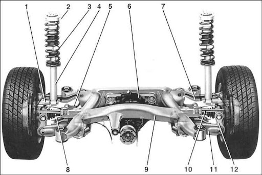

Промышленная фирма была основана Карлом Фридрихом Раппом в октябре 1916 года, официально компания BMW была зарегистрирована 20 июля 1917 года, но первоначально — как производитель авиационных двигателей, Bayerische Flugzeug-Werke. Округ Мюнхена — Milbertshofen был выбран потому, что он располагался близко от Flugmaschinenfabrik Густава Отто — немецкого производителя самолётов.
Могущественный в довоенную эпоху концерн BMW оказался после Второй мировой войны в критическом положении во многом из-за запрета на производство составлявших основу её бизнеса авиационных двигателей и уничтожения или занятия противниками Германии по мировой войне заводов концерна в Мюнхене (Американская зона оккупации Германии) и Айзенахе (Советская военная администрация Германии). Так, Мильбертсхофенский автозавод под Мюнхеном, согласно решению американских оккупационных властей, подлежал сносу. Как и другим немецким автомобильным компаниям с разрушенной Второй мировой войной промышленной базой, BMW понадобились годы на возрождение в качестве серьёзного производителя автомобилей: лишь в 1962 году компания выпустила на рынок автомобиль, позволивший ей выполнить эту задачу.
| Дата | Событие | |
|---|---|---|
| 1928 год | Приобритение завода в Айзенахе | |
| 1929 год | Разработка первой машины BMW | |
Плавают обороты. Неровная работа двигателя М62 связана, в основном, с подсосом воздуха во впускном коллекторе, с неисправными КВКГ, расходомером воздуха, датчиками положения дроссельных заслонок, либо грязными дроссельными заслонками.Кроме того, через 250 тыс. км на М62 увеличивается расход масла, что решается заменой маслосъемных колпачков, каждые 200 тыс. умирают подушки двигателя, не слишком долго ходит генератор. Мотор любит только качественное масло, в идеале то, что рекомендует производитель. Экономить на рабочих жидкостях в М62 не стоит, а вместе с регулярным обслуживанием и грамотных уходом, двигатель будет ездить очень долго и практически без проблем.
 Конструкция передней подвески рассматриваемого автомобиля характеризуется следующими особенностями. Кронштейн двухшарнирного переднего моста, полностью изготовленного из алюминия, прикручивается к кузову при помощи резиновых подшипников. С поворотными кулаками соединен отдельный кронштейн через поперечные тяги и рычаги. Также к ним и кузову прикручивается и каждая из амортизационных стоек, в состав которых входят винтовые рессоры и двухтрубных газонаполненных амортизаторов. Для создания лучшего сцепления с поверхностью дороги и противодействия наклону кузова в процессе поворота автотранспортного средства существует отдельная деталь, называемая стабилизатором.
Задняя подвеска представляет собой многорычажную конструкцию с подрамником и двойной эластичной подвеской главной передачи. Колеса направляются четырьмя поперечными рычагами, эластично связанными с подрамником. Подрамник также эластично связан с кузовом. Кроме того, рычаги и ведущие колеса геометрически расположены таким образом, что они вместе с резиновыми опорами создают эффект совместного управления задними колесами и обеспечивают точно рассчитанную подстройку угла поворота задних колес. Это дает выигрыш в безопасности движения в любых ситуациях.